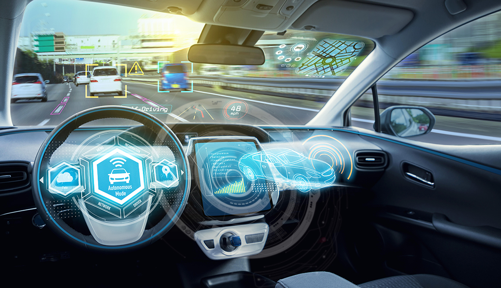

Autonomous things are the developments in technology that are expected to develop computers into the physical environment as human independent entities. They would be free to interact with objects and act freely. An example of this is self-driving cars.

Several systems work in conjunction to make autonomous things function independently from human interaction. An example of this would be the radar, sensors, steering system and motors in a self driving car, these must interact efficiently in order for the car to function independently and avoid accidents. Making these systems work in conjunction is extremely difficult and that's why self driving cars are still in development.